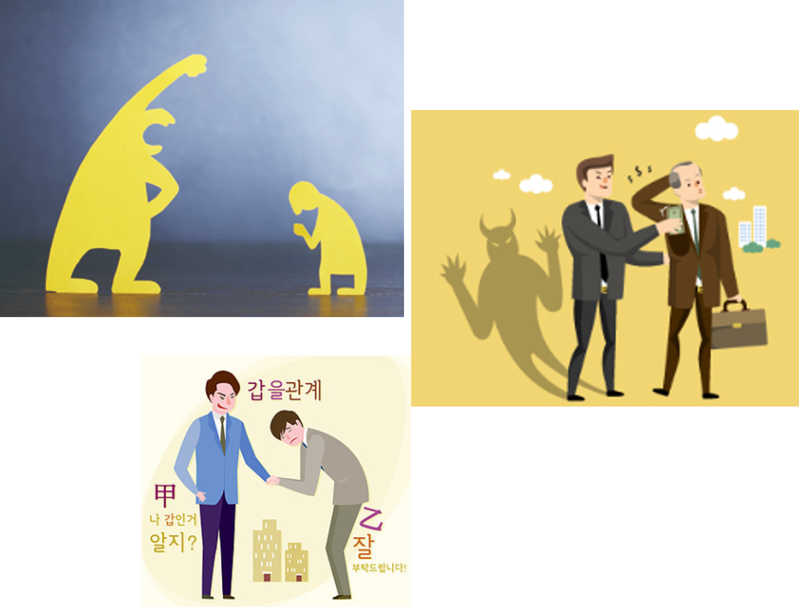

About Us
반갑습니다! 여기 폐석면 관련 사업주의 권리와 국민건강을 지키기 위해 석면추방국민연대 라는 이름으로 모였습니다.

우리의 비전
- 석면으로부터 국민의 안전과 생명을 최우선으로 보호
- 석면해체제거 등록업, 폐석면 운반업, 중간처분업, 최종처분업의 권리보호
- 연대와 협력을 통해 사회적 책임 실현
우리의 활동
- 석면의 해체, 운송, 보관, 처리 과정에 대한 정책 제안 및 적법처리 요구
- 폐석면 불법처리를 알리는 교육·홍보 활동
- 철거 후 현장 방치된 폐석면 처리를 위한 사회적 대안 모색과 대책요구
참여 안내
석면추방국민연대는 여러분의 관심과 참여로 더욱 단단해집니다. 작은 응원이 큰 변화를 만듭니다.
함께해 주세요! (지금 참여하기!!)석면추방국민연대 로고
석면추방국민연대의 영문명 Korean Alliance Against Asbestos 의 약자를 사용하여 Korean의 K, 삼각형 세변의 3A, 추방의 의미를 담아 형상화한 로고
로고 : 석면추방국민연대의 영문명의 약자 KAAA를 K3A로 표현한 영문로고
로고 : 석면추방국민연대의 국문로고